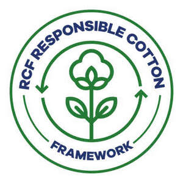

Trade Mark Journal No.2025/034 22 August 2025
UK00004247909 12 August 2025 (42,44)

- Class 42
- Science and technology services; Testing, authentication and quality control; IT services; Agricultural research; Surveying [engineering]; Technical consulting in the field of environmental engineering; Technical engineering; Calibration [measuring]; Calibration services relating to analytical apparatus; Laboratory services for soil analysis; Laboratory services for biomanufacturing; Integrated scientific research on vermin for greenhouses and harvest crops; Information services relating to the safety of fertilisers used in agriculture; Professional consulting services and advice about agricultural chemistry; Services for assessing the efficiency of agricultural chemicals; Scientific research consulting in the field of agricultural irrigation; Environmental surveys; Consultancy services relating to quality control; Conducting of quality control tests; Conducting industrial tests; Conformance testing services; Certification [quality control]; Inspection of agriculture, quality control services for certification purposes.
- Class 44
- Agricultural services, agricultural services in the nature of regenerative farming; Agriculture, aquaculture, horticulture and forestry services; Agriculture, horticulture and forestry services; Agriculture services; Agricultural consultancy; Agricultural information services; Advisory and consultancy services relating to weed, pest and vermin control in agriculture, horticulture and forestry; Advisory and consultancy services relating to the use of manure in agriculture, horticulture and forestry; Plant breeding; Crop cultivation; Consultancy relating to the cultivation of plants; Crop sowing.
SANKO TEKSTIL ISLETMELERI SANAYI VE TICARET ANONIM SIRKETI
Representative: INKA PATENT DANIŞMANLIK LIMITED COMPANY